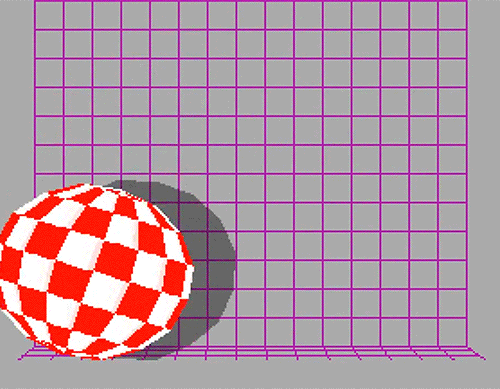

BrowserFest is an online competition + celebration of creative coding. it borrows from the playful && dynamic demoparty format to foster the artful development of + experimentation with the WWWeb.
from Feb 22 through April 10, we'll be exploring creative coding through live sessions, interactive tutorials, && starter (code) packs.
the fest will culminate in a realtime interactive event in ur WWWeb browser on April 10 with prizes and performances
BrowserFest invites individuals, teams and crews of makers, tinkerers, hackers, poets, musicians, and artists to build demos, sketches, and artworks that are in and of the browser.
creative coding?
HTML + CSS + JavaScript are used to create nearly everything we experience online. these coding languages were invented for very specific purposes, like structuring (HTML) && styling (CSS) the layout of a wwwebpage or app. as the WWWeb evolved to meet the needs of an increasingly networked world, the capabilities of HTML + CSS +JavaScript evolved along with it. today these same languages can be used to create all sorts of interesting, dynamic, && unexpected things in our browsers.
wwwhat's a demo?
a “demo†iz a short self-contained experimental audiovisual code sketch. for BrowserFest, that's one HTML page with HTML, CSS, && JS.
like the name implies, demos are demonstrations of what’s possible–rather than what’s expected. we believe that coding is an inherently creative practice, but w/in the context of a “demoparty”, creative coding specifically means pushing these core WWWeb languages to their conceptual limits && doing unconventional && even absurd things with them.
in order to "stay on the same page", that iz, ur ur demo, wwwe'll be leveraging a tool/environment that we built called "netnet" to facilitate the creation, collaboration, && submission of demos.
can i participate?
heck yes! BrowserFest is being organized by netizen.org and the Media Arts & Design Program a the University of Chicago. wwwhile the programming is targeted to studetns, BrowserFest is open to everyone--in the spirit of the open wwweb. Please read the code of conduct. We take community building seriously and look forward to seeing your contributions!
i don't know code!
you can still participate without knowing how to code! the culminating BrowserFest event on April 10th will be a fun, experimental browser-based realtime exe.travaganza for every01 to enjoy. we’ll also be hosting a series of synchronous + asynchronous events over the next few wwweeks wwwhich wwwill include presentations by creative coders we think every01 will find interesting. if u want to submit a demo to the competition there’s loads of diff creative roles one can play in their crew: producing music, videos, animated gifs && other assets. however, at the end of the day, every demo in the festival is ultimately an HTML file, consisting of HTML, CSS, && potentially some JavaScript code, so someone in ur crew is gonna be writing some code. for more details on participation, including how to form/join crews && submit demos, check out our participation page.
if u’ve never coded b4 but u’re curious to try, we’ve got u covered! every aspect of BrowserFest was designed to take place online, including the creation of the demos themselves. our creative coding environment called netnet.studio, where u’ll be greeted by netnet, a friendly AI which is part code editor && part teaching assistant. netnet will explain any piece of code that you're curious about && help u spot mistakes.
We’ve also produced a few interactive tutorials that you can follow on netnet as well as a series of example sketches you can remix and experiment with.
Remember, creating demos iz more about experimentation than it is proper “programming.”
So whether you’re brand new to code or a veteran Web master, we’re hoping that the tutorials and examples we’ve created on netnet will inspire you to produce some creative and unconventional pieces of Internet art. For more info on where to find these tutorials and examples check out our whois netnet page.
collaboration ??
there are a fewww ways u can collaborate with others in BrowserFest. traditionally, demo crews have many different roles. for exe.ample, there are often visual artist, musicians, txt writers, and coders that all contribute bits to a demo. if you already have a crew, great! if you're looking for others to collaborate, we'll be launching a discord in the first week of the fest where you can meet others looking to team up.
if u prefer to fly solo, remixing may be up ur alley. remixes and mashups are at the heart of creating stuff online--from code to memes. Browserfest embraces this and is building the ability to remix demos into the submission process (stay tuned). you can immediatly start informatlly remixing by checking out the examples we've curated w/in netnet.

how do i wwwin?
there are 3 types of awards: Judges Awards, Community Awards, and WildCard Awards. all demos will be judged on
Judges will Award demos based on attribution and call-outs, technical creatitivy, unconventional uses of HTML, CSS, and JS, poetics, and personal taste.
Community awards will be driven by the system. These will include most remixed demo, best demo remix evolution, and more
WildCard Awards are special awards that will go to demos that break the mould and honor the scene.
Examples of WildCard Awards may include: Best Music/Audio, Weirdest Browser Feature, Most Skeuomorphic, and no-div. These are not set in stone and may update at any time. Heck, if you submit something genera-bending or left-field, a yet-to-be-created category may out there for ya!
Uchicago participants
*This Winterfest event is Maroon Cup point eligible.* The Maroon Cup is designed to foster friendly competition between residence halls/houses while participating in sanctioned (i.e. primarily UChicago intramural) activities throughout the academic year.
The undergraduate house earning the most total points will have their name added to the Maroon Cup trophy. To be eligible for Maroon Cup points, all individuals/teams must include their house’s name within their entry. If participating as a team, all team members must be eligible house members to earn Maroon Cup points. Houses may only receive points for one individual/team per event to avoid “stuffing the ballot box”.